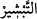
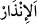
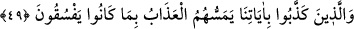

müjdelesinler ve uyarsınlar diye gönderdik.
“
” Sevindirici bir şeyi haber vermek, müjdelemek demektir.
“
” Zararlı bir şeyi haber vermek, uyarmak demektir.
“Kim” onlara “inanır ve kendini düzeltirse” amelini ıslah ederse yahut salah yoluna
girerse, “onlara” peygamberlerin uyardığı dünya ve ahiret azabından “korku yoktur ve
onlar” müjdelendikleri dünya ve ahiret sevabından kaçırdıkları şeylerden ötürü
“üzülmeyeceklerdir.”
49. Âyetlerimizi yalanlayanlara da doğru yoldan çıkmaları yüzünden azap
dokunacaktır.
Peygamberlerin müjdelerken ve uyarırken söyledikleri, ümmetlerine tebliğ ettikleri
“âyetlerimizi yalanlayanlara da doğru yoldan çıkmaları yüzünden” yani devamlı olan
fâsıklıkları sebebiyle demektir. “Fâsıklık (fısk)”, hakîkatleri tasdik etmeme ve tâatleri
terk hususunda ısrar etmektir. İşte onlara elem verici bir “azab dokunacaktır.”
“Dokunma”, azâba isnad edilmiştir. Halbuki irade ve ihtiyara bağlı fiillerden olduğu
için onun istiare-i mekniyye yoluyla canlılara isnad edilmesi uygun düşerdi. Burada
azab, sanki onlara elem vermek ve ulaşmak isteyen canlı bir varlık gibi ifade edilmiştir.
Âyetlerde hem teşvik, hem de uyarı vardır:
el-Kelimatü’l-Kudsiyye’de der ki: “Ey Ademoğlu, sıratı geçene kadar benim
mekrimden emin olma!”[104]
Rivayete göre Allah Teala İbrahim (a.s.)’a şöyle hitab etti: “Ey İbrahim! Sende
gördüğüm bu şiddetli korku nedendir?” İbrahim (a.s) şöyle cevap verdi: “Ya Rabbi!
Nasıl korkmayayım ki babam Âdem sana yakınlık makamında olduğu halde, onu kendi
elinle yaratıp ona ruhundan üflediğin halde, meleklere ona secde etmelerini emrettiğin
halde tek bir günah sebebiyle onu yakınlığından uzaklaştırdın.” Bunun üzerine Allah
Teâlâ ona: “Ey İbrahim, sevenin sevdiğine karşı gelmesinin çok ağır olduğunu bilmez
misin?” diye vahyetti.
Malik b. Dinar’dan nakledildiğine göre o şöyle demiştir: Basra kabristanına girdim.
Baktım ki Mecnun Sa’dûn da orada. Ona: “Ne haldesin, nasılsın?” dedim. “Ey Malik,
hazırlıksız ve azıksız uzak bir yolculuğa çıkmak isteyerek akşamlayıp sabahlayan,
kulları arasında adaletle hükmeden bir Rabbin huzuruna çıkarılacak olan kimsenin hâli
nasıl olur ki?” dedi. Sonra katıla katıla ağladı. “Niye ağlıyorsun?” dedim. Şöyle cevap
verdi: “Vallahi ne dünya hırsından, ne ölümden ve ne de yok olma korkusundan
ağlıyorum. Ömrümde güzel amel yapamadığım günler için ağlıyorum.”